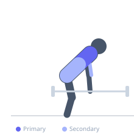

Exercise guide / Deficit Barbell Bent-Over Row
Deficit Barbell Bent-Over Row
The deficit barbell row is performed with the lifter standing on elevated plates or a platform, allowing the barbell to descend lower than floor level. This increased range of motion provides a greater lat stretch at the bottom of each repetition and may enhance muscle fiber recruitment through the extended pull. The exercise requires superior hamstring flexibility and hip hinge mechanics compared to a standard barbell row.
Primary muscles
latissimus dorsi
rhomboid major
Secondary muscles
trapezius middle
biceps brachii long head
erector spinae
Stabilizers
hamstrings
transverse abdominis
Equipment
Standard Barbell
Weight Plates
Optional
Lifting Straps


Starting position
- Stand on 2-4 bumper plates or a low platform (2-4 inches elevation). Position the barbell over the mid-foot. Hinge at the hips to approximately parallel with the floor.
Setup
- Stack plates or use a wooden platform. Ensure the surface is stable and will not shift. The deficit increases the bottom ROM of each rep.
Steps
- Step 1: Stand on the elevated platform with the barbell hanging below the platform level.
- Step 2: Hinge at the hips until the torso is near parallel, maintaining a neutral spine.
- Step 3: Brace the core, retract the scapulae, and pull the bar toward the lower sternum.
- Step 4: Squeeze rhomboids and lats at the top of the movement.
- Step 5: Lower the bar past the platform edge under full control.
Coaching cues
- Let the bar drop below the platform
- Spine stays neutral even at the extended bottom position
- Pull with the elbows, not the hands
Breathing
- Inhale and brace before each rep. Exhale through the pull.
Range of motion
- Bar descends below platform level at the bottom, pulled to lower sternum at the top.
Tempo
- 3-1-2-0
Common mistakes
- Using a platform so high that lumbar rounding occurs to reach the bar
- Not controlling the eccentric, letting the bar drop past the platform level
- Insufficient hamstring flexibility causing the hips to rise
Safety
- Requires good hamstring flexibility — do not force depth beyond what neutral spine allows
- Use a stable, non-slip platform only
- Reduce weight relative to your standard barbell row
Training
- strength: 4–8 reps
- hypertrophy: 8–12 reps
- strength: 3–5 sets
- hypertrophy: 3–4 sets
- Rest: {'strength': 180, 'hypertrophy': 90}